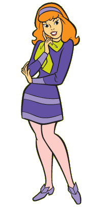

-
Despre
Scooby-Doo e un serial animat de televiziune produs pentru programul animat de sâmbătă dimineața în diferite versiuni din 1969 până în prezent. Seria a fost creată de Joe Ruby și Ken Spears pentru Hanna-Barbera Productions, care au produs numeroase spin-off-uri până în 1997 când Warner Bros. au preluat conducerea asupra acesteia. Cu toate că formatul, distribuția și vârsta personajelor a variat semnificativ de-a lungul anilor, versiunea cea mai cunoscută conține un câine vorbitor - Scooby-Doo și patru adolescenți: Fred „Freddie” Jones, Daphne Blake, Velma Dinkley și Norville „Shaggy” Rogers.
Personajele (colectiv numite oficial „Mistere SRL” - en „Mystery, Inc.” - cu toate că nu a existat o referire la acest nume în seria originală) călătoresc într-o dubă numită „Mașina Misterelor” (en. „Mystery Machine”) și rezolvă mistere care de obicei conțin povești despre fantome, monștri mitici și alte forțe supranaturale. La sfârșitul fiecărui episod, forța supranaturală avea o explicație rațională (planuri diabolice care foloseau costume și efecte speciale pentru a speria sau a distrage atenția). Unele versiuni ulterioare au oferit variații asupra temei și explicației supranaturalului, precum și noi personaje, precum vărul și nepotul acestuia, pe lângă sau în locul unor personaje.
Scooby-Doo a fost inițial transmis de CBS din 1969 până în 1976 când a fost mutat pe ABC. ABC a anulat desenul în 1986, dar a difuzat un spin-off, Un cățel numit Scooby-Doo, din 1988 până în 1991. O nouă serie Scooby-Doo, Ce e nou, Scooby-Doo? a fost difuzat de WB Network din 2002 până în 2005. Reluări ale seriilor originale precum și din Ce e nou, Scooby-Doo? sunt difuzate frecvent pe diferite posturi de televiziune din toată lumea, precum Cartoon Network și Boomerang.
-
Despre serial
Cei patru tineri și Scooby Doo! (oficial numiți "Mistere SRL", cu toate cǎ nu se face referire la acest nume în seria originalǎ) se plimbǎ prin lume într-o mașină numită "The Mystery Machine"(rom. "Mașina Misterelor"), și rezolvă mistere legate de fantome și alte forțe supranaturale. La sfârșitul fiecǎrui episod, forțele supranaturale au explicații raționale, de obicei infractori în mǎști și costume, folosind efecte speciale pentru a speria și a distrage atenția. Versiunile mai târzii ale serialului conțin diferite variații ale supranaturalului, și include personaje ca vǎrul lui Scooby, Scooby-Dum și nepotul lui Scooby, Scrappy-Doo pe lângắ personajele originale, sau chiar în locul lor.
În 1968 un număr de organizații conduse de părinți, denumită Action for Children's Television sau ACT au organizat proteste vocale legate de prea multă violență în serialele de sâmbătă dimineața. Multe dintre aceste proteste s-au referit la producțiile Hanna-Barbera, Space Ghost și The Herculoids care au fost anulate în 1969 din cauza presiunilor celor de la ACT. Membri ai acestori organizații au urmărit Hanna-Barbera și alte studiouri de animație pentru a se asigura că noile desene vor fi sigure pentru copii. Fred Sliverman, director executiv în fruntea programelor pentru copii pentru cei de la canalul CBS la acea vreme caută un program care să revitalizeze emisiunile de Sâmbătă dimineața și el a organizat grupurile care au urmărit Hanna-Barbera și celelate studiori de animații. Rezultatul a fost, The Archie Show, bazat pe cartea cu glume pentru adolescenți a lui Bob Montana. Au avut succes și numerele muzicale The Archies difuzate în timpul fiecărui program (dintre care cel mai de succes a fost “Shugar , shugar”).
-
Personaje
Scooby-Doo Scoobert "Scooby" Doo este personajul principal al seriei cu același nume. Scooby este un mare danez maro speriat de fantome. Este întotdeauna văzut purtând o zgardă turcoaz. Cyber Scooby din nivelul 10 al jocului video din Scooby-Doo și Vânătoarea de Viruși poartă o zgardă roșie. 
Shaggy Rogers Norville "Shaggy" Rogers este un personaj fictiv din seria de desene animate americană Scooby Doo, despre aventurile a patru adolescenți și a câinelui lui Shaggy, din specia marelui danez pe nume Scooby Doo. Este întotdeauna văzut cu păr maro și de regulă cu tricou verde, pantaloni roșii și pantofi negri. Câteodată (în Cele 13 fantome ale lui Scooby-Doo, Scooby-Doo îi cunoaște pe frații Boo, Scooby-Doo și Școala de Vampiri, Scooby-Doo și Vârcolacii Potrivnici și doar Cyber Shaggy din nivelul 10 al jocului video din Scooby-Doo și Vânătoarea de Viruși) poartă un tricou roșu și pantaloni albaștri.  Daphne Blake Daphne Anne Blake este un personaj fictiv creat de William Hanna și Joseph Barbera ca fiind unul din cele 5 personaje principale din serialul de desene animate Scooby Doo, alături de Fred Jones, Velma Dinkley, Shaggy Rogers și desigur Scooby-Doo. Este întotdeauna văzută cu păr portocaliu cu o bentiță mov deschis, rochie mov închis cu o eșarfă verde și pantofi mov deschis. În primele sezoane Daphne a fost folositä mai mult pe post de decor, în următoarele sezoane primind un rol mai important, mai ales când Welma și Fred au fost eliminați din serie. 
Fred Jones Frederick "Fred" Herman Jones este unul din cele 5 personaje principale ale francizei Scooby Doo. Este de obicei reprezentat cu un păr blond, cămașă albă cu guler albastru și eșarfă portocalie, pantaloni albaștri și pantofi maro. Liderul cu înfățișare masculină al Mistere S.R.L. și singurul care conduce Mașina Misterelor, Fred îi conduce pe Scooby Doo și pe restul găștii în aventurile lor pentru rezolvarea misterelor. Spre deosebire de Scooby Doo, Fred rămâne mereu calm când fantomele apar și, datorită sângelui său rece, toată gașca scapă cu bine. 
Velma Dinkley Velma Dace Dinkley este un personaj fictiv al desenelor animate americane Scooby Doo. Deși este cea mai tânără din grup, Velma este cea mai inteligentă, perspicace și capabilă de a alcătui planuri pentru a prinde răufăcătorii. Are părul roșcat și poartă mereu un pulover portocaliu, fustă vișinie și ciorapi portocalii. Nu vede prea bine fără ochelari. Când Scooby și Shaggy sunt prea speriați și nu vor să fie ei momeala, Velma le oferă câte-un „Scooby Snack”. Este probabil cel mai important membru din gașcă. 
Scrappy-Doo Scrappy Cornelius Doo este un cățeluș fictiv creat de Hanna-Barbera în 1979, cu faimoasa sintagmă "Las' pe mine!" (engleză Lemme on 'em!) și este nepotul starului Hanna-Barbera Scooby-Doo. Scrappy a apărut într-un număr de numeroase incarnații a seriei Scooby Doo. Scrappy este nepoțelul energic al lui Scooby. Spre deosebire de unchiul său, Scrappy este mult mai curajos și vrea să se bată cu un monstru când îl întâlnește. Inițial, Scrappy a devenit un personaj breakout, fiind batjocorit și ridiculizat pentru faptul că a adus declinuri francizei Scooby-Doo. Acest lucru este foarte bine arătat în filmul Scooby-Doo, unde acesta a fost personajul negativ care s-a deghizat într-un tiranozaur. Nu numai atât, dar până și o veche reclamă de la Cartoon Network și-a bătut joc de Scrappy, recalmă în care acesta s-a plâns personajelor din cadrul serialelor Cartoon Cartoons cum că canalul nu îl venerează, deoarece "el a fost aici înaintea lor". -
Galerie Foto
poza 1
poza 2 poza 3
poza 4